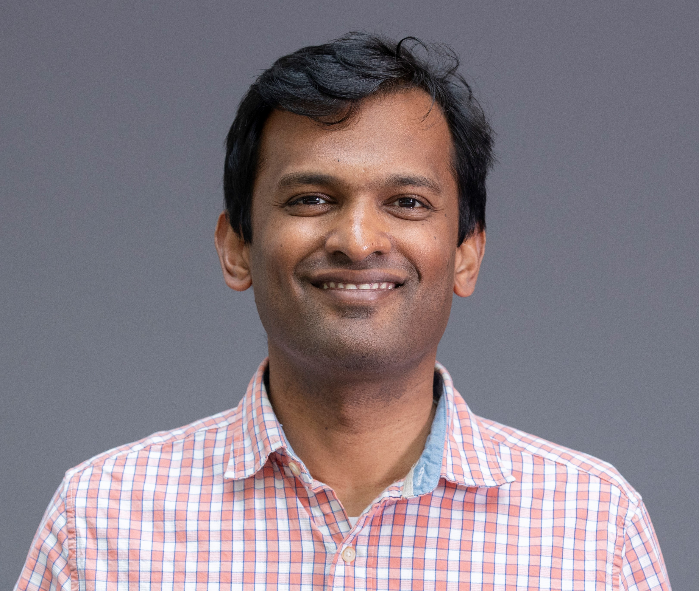

The International Workshop on
Infrastructure for Trustworthy Software Agents
Advancing the systems, methods, and shared foundations needed to evaluate, observe, reproduce, and safely deploy agentic software.
Submission deadlines: Abstracts are due October 18, 2026, and full papers are due October 23, 2026. All deadlines are Anywhere on Earth (AoE).
About AGENTVERIFY
Large language model (LLM)-based agents are rapidly transforming software engineering. Recent agents can inspect repositories, invoke tools, execute tests, edit files, search documentation, interact with development environments, and generate patches. These capabilities create exciting opportunities for code generation, debugging, testing, program repair, code review, software maintenance, and repository-level automation.
At the same time, they introduce new reliability, safety, reproducibility, and evaluation challenges that are not fully addressed by existing software testing, AI evaluation, or benchmark methodologies. AGENTVERIFY aims to bring together researchers and practitioners to define and advance the emerging research area of infrastructure for trustworthy software agents.
The workshop focuses on the broader execution stack that shapes agent behavior, including prompts, tools, skills, harnesses, sandboxes, benchmarks, telemetry, memory, grading scripts, and evaluation protocols. Rather than treating agent performance as solely a property of the underlying model, AGENTVERIFY emphasizes the engineering infrastructure needed to evaluate, observe, debug, reproduce, and safely deploy agentic systems in realistic software engineering environments.
Organizing Committee
- Song WangYork University
Canada - Gias UddinYork University
Canada - Jinqiu YangConcordia University
Canada - Lin ShiBeihang University
China 
Nachiappan NagappanMeta
USA